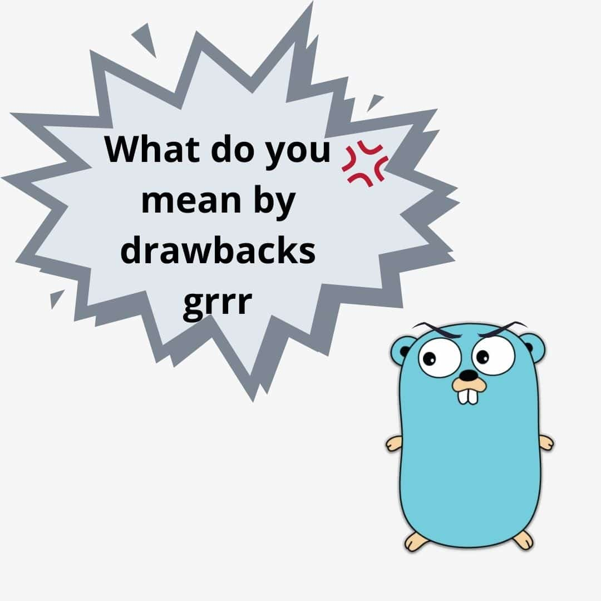

Is Go The Best Programming Language?
An analysis of Go


Introduction
Hello Cucumbers! Having worked with Go for a few months, I wanted to share out of my thoughts on it. In this article, I hope to give an unbiased analysis of the strengths and weaknesses of Go.
Content Page
History of Go
Go is an open-sourced, statically typed programming language developed by Google. More specifically, it was spear-headed by programming revolutionaries -- Robert Griesemer, Rob Pike, and Ken Thompson (inventor of B programming language). Google felt that there were no programming languages that could actually meet their needs. Java and C++ were the main players in server programming but they were challenging to use while Python was weakly or loosely typed. This left the developers no choice but to create Golang.
Go is actually one of the fastest growing programming languages in 2021 and has gained much popularity. If you are looking to work in some of these companies like Facebook, Google, IBM, having Go as part of your arsenal of programming languages might just give you an edge over other applicants.
Fun fact: The language is actually called Go not Golang, but because the domain name (for its documentation) go.org was not available, the developers had to settle with golang.org. Golang is the colloquial name but Go and Golang can be used interchangeably.
Advantages of Go
Go is one of the fastest languages, in fact it is about 40 times faster than that of Python. Can you imagine that speed! Go is a compiled language which is converted into machine code and directly read by the processor. This is in contrast to interpreted languages like Ruby, Python and PHP that are much slower.
“Go is such a refreshing language to program in, there is very little clutter just the stuff you need to get the job done” – Matt West
Go is built to be simple and humanly readable. It is as easy to pick up as PHP but possesses the power of C. Golang was also built syntactically similar to C so if you have experience in C or Java, the transition to Go would be quite effortless. Go lang also does not use classes and so the complexity that comes with inheritance is also gone. However, Go’s substitute for that is interface.
Go can be used for a variety of applications. A few examples are for system and network programming, big data, machine learning, audio and video editing, and more. Go is also becoming an increasingly popular backend language not only because of its speed but due to its well-built standard libraries.
Go allows for concurrency which is supported by goroutines and channels. This allows for multiple tasks to be run at the same time efficiently. And because of this ability to handle tasks simultaneously, you are able to scale your code and handle, for example, a large volume of users, at one time.
Disadvantages of Go
Despite all the advantages, nothing is perfect and here are some drawbacks that I have experienced or found with Go.

Lack of community support. As Go hasn’t been around for as long as C++ or Python, I personally feel that the online support community on stack overflow and other platforms are not as robust as that of other languages.
I remember sharing this insight I had with my team lead at work, who is a huge fan of Go, and he said, “Well, maybe Go is just that simple that users don’t even have that many questions to ask!”
Nevertheless, for self-taught programmers, availability of online resources is a key factor to consider when picking up a language and I feel this is something to take note of.
Golang is not considered an OOP (Object Oriented Programming) Language. Thus the capabilities that come with OOP cannot fully be found in Go. However, Go does follow some OOP rules with the help of Interface and Struct.
It is a more verbose language than Python. You would take a longer time to code out a simple feature. This is because it is modelled after the C language. But honestly, in the grand scheme of things, what is a few lines more of code in exchange for faster compiling speed.
Another issue is the absence of a GUI Library, or rather lack of libraries in general. Fear not, most of the basic ones like HTTP, JWT, viper and even slack bots are available. This might only be a problem if you are using Go for some obscure functionalities.
Synthesis
Go definitely shows a lot of promise as a programming language with its ability. Although popular blogs may not be very well furnished with Golang helplines, this issue will only improve in the coming years.
Personally, I found Go relatively simple to pick up, as I had some prior experience programming in C. I spent a few days watching some tutorial videos, trying out hands-on practices and that was all the preparation I had before I dove into my company’s code. I found the structs relatively easy to understand and use. After a week or 2 of some trial, error and guidance, I started fixing bugs in my company's code!
However, I did face some difficulties, especially when researching about Golang SDK for Google Cloud Functions (GCP). I felt that there wasn’t proper documentation of the library and I had a hard time trying to figure out the methods. This relates to one of the drawbacks mentioned above. Since Go is still a young language, help for more specific tasks may be harder to find online and this would deter a lot of budding programmers from stepping into the field. Only with the help of the senior software developers at my office could I better understand the GCP SDK.
Conclusion
“Go is not meant to innovate programming theory. It’s meant to innovate programming practice.” – Samuel Tesla
Overall, the trend is that programmers who can code in Go are in high demand and only seem to be increasing as more companies switch to Go. I had an enjoyable time working with Go and I would recommend you to pick it up too. The saying rings true, when Google gets to something, they do it best.
If you are interested in learning Go, you can check out my other article here where I share more about how I started my Go journey and the steps I took to become better at it. Stay cool Cucumbers!